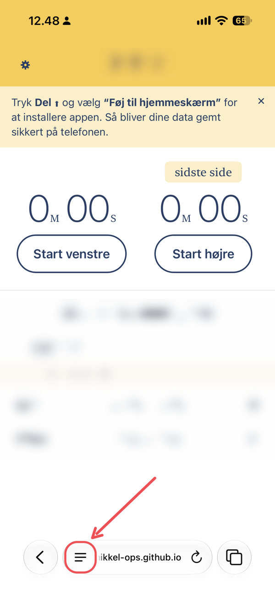
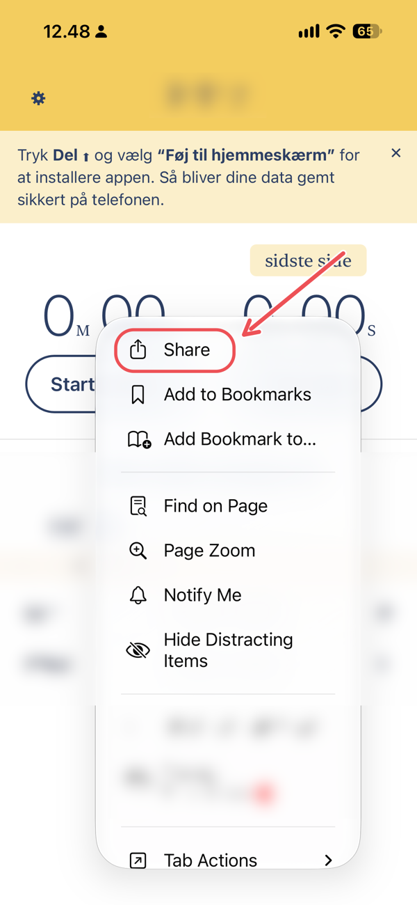
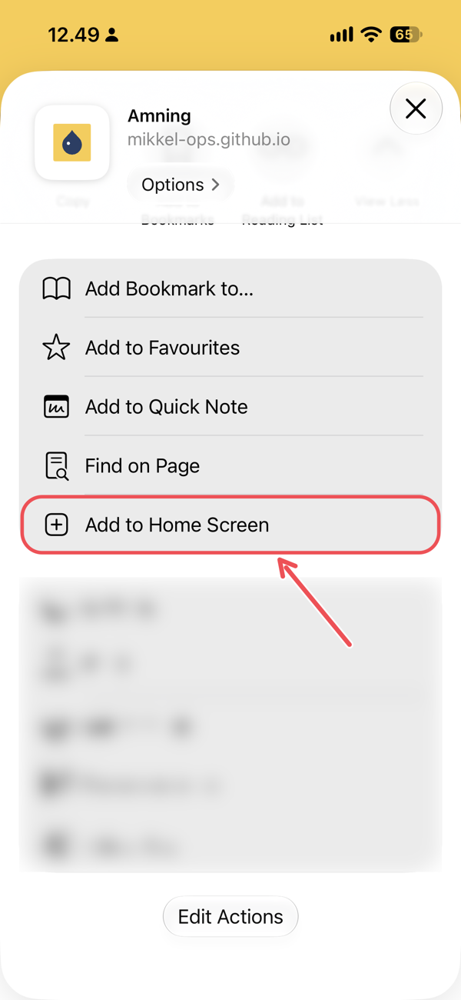

Åbn mikkel-ops.github.io/amme-app i Safari, og følg de 4 trin herunder.
Det tager under et minut. Dine data bliver kun gemt på din egen telefon.
1 Åbn menuen
Tryk på ≡-ikonet nederst til venstre i adresselinjen.

2 Tryk på Del
Vælg Del øverst i menuen. (På engelsk: “Share”)

3 Føj til hjemmeskærm
Tryk på Føj til hjemmeskærm. (På engelsk: “Add to Home Screen”)
Kan du ikke se den? Rul ned eller tryk på “Vis flere”.

4 Tryk Tilføj
Sørg for, at “Åbn som webapp” er slået til, og tryk Tilføj øverst til højre. (“Open as Web App” → “Add”)
Nu ligger Amning på din hjemmeskærm med den blå dråbe. 💧
Åbn den derfra fremover, ikke fra Safari.
Har du en ældre iPhone, sidder Del-knappen (firkant med pil op) direkte nederst på skærmen. Så kan du springe trin 1 over.
Gå til appen